Der Abstieg Gruft der Wäscherinnen
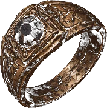
I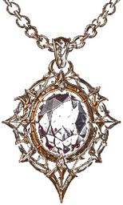
IV VI
VIEin verwittertes Siegel (I) liegt jeden Tag gratis bereit.
Grabsiegel der Seufzer · IV
Gegner +25 % Leben
Elite-Rudel: 2 statt 1
Seil-Ausgang fehlt
Beute-Menge +60 % · Seltenheit +35 %
Nur im Abstieg
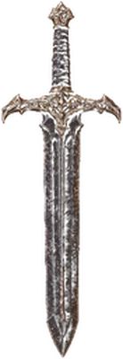
Einzigartige & Sets: fallen ab Stufe 10 nur noch hier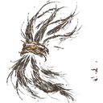
Boni der Stufe I: die besten Werte, sonst nirgends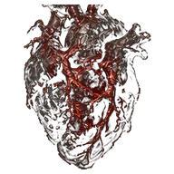
Schwarze Herzen: ×3, jede Elite kann eins tragenHöhere Siegel: der Weg zu Stufe X
Warum das Risiko lohnt: Streifzug und normale Krypta bleiben der sichere Weg für EP und Gold. Die Spitze der Beute (Einzigartige, Stufe-I-Boni, Herzen, höhere Siegel) gibt es nur hier. Der Eintritt kostet keine Glut, nur ein Siegel. Ein schwaches Siegel liegt täglich gratis bereit, es gibt also nie eine Sperre.

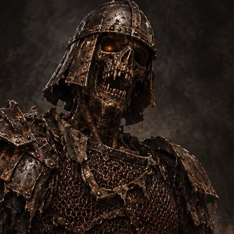

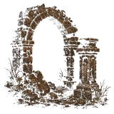
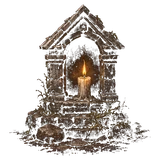

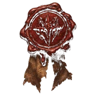
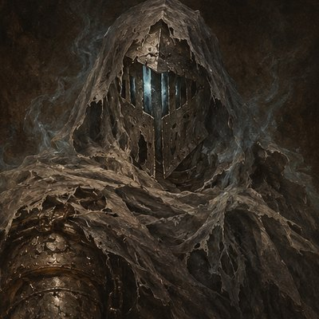
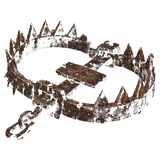

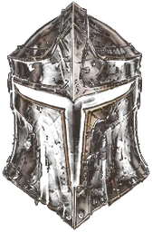
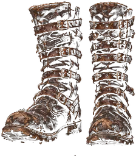
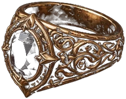
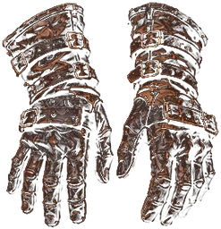

Jeder Raum ein Shakes-Kampf (Auto-Kampf, überspringbar), Leben und Trank-Ladungen laufen mit. Unruhe steigt je Raum: Gegner stärker, Beute ×1 → ×3. Ausgänge grün: das Seil ist schon eingestürzt, der Brunnen kostet Gold, der hintere liegt im Nebel. Sicheres Fach (grün umrandet): ein Teil kommt immer mit heraus. Der Sack ist klein, also wählst du aus, was du trägst.
Entkommen · über den Brunnen
Räume7 · Unruhe ×2,6
Elite besiegt2 · 1 Schwarzes Herz
GefundenWäscherinnen-Klinge
SiegelGrabsiegel V ×1, IV ×1
Brunnen−60 Gold
Wenn du gefallen wärst
Bleibt
Angelegte Ausrüstung · Sicheres Fach · Stufe, EP · das Siegel ist verbrauchtVerloren
Alles im Beutesack · Herzen aus diesem AbstiegVor jedem Raum: Siegchance + was du verlieren würdest.
Verlust spürbar, nie vernichtend: Die Ausrüstung am Körper ist immer sicher, ein Fach auch. Verloren ist nur, was du heute gefunden hast. So bleibt die Gier-Frage „noch ein Raum?“ spannend, ohne dass ein Tod Tage kostet.